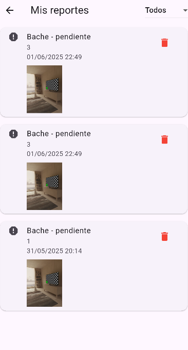

1. Descripción del proyecto
La aplicación Vecino Seguro nació para abordar el ODS 11: “Ciudades y comunidades sostenibles”. Permite que los residentes de una zona periurbana (por ejemplo, Tlajomulco de Zúñiga, Jalisco) reporten incidencias urbanas de forma rápida, almacenando la información en Firebase y notificando a las autoridades vÃa WhatsApp.
2. Instalación y uso
-
Clona el repositorio y navega a la carpeta del proyecto:
git clone https://github.com/<TU_USUARIO>/vecino_seguro.git cd vecino_seguro -
Asegúrate de tener instalado Flutter
3.29.2(o superior) con Dart3.7.2. Puedes verificarlo asÃ:
Si necesitas cambiar de canal o versión, por ejemplo:flutter --versionflutter channel stable flutter upgrade flutter version 3.29.2 -
Instala dependencias de Dart/Flutter:
flutter pub get -
Asegúrate de haber configurado el archivo
android/app/google-services.json(Android) yios/Runner/GoogleService-Info.plist(iOS) con las credenciales de tu proyecto Firebase. -
Corre la aplicación en un emulador o dispositivo real:
(En Android Studio, abre el AVD Manager, elige un emulador y presiona Run).flutter run -
Para generar un APK listo para producción:
El APK generado quedará enflutter build apk --releasebuild/app/outputs/flutter-apk/app-release.apk.
3. CaracterÃsticas principales
-
Autenticación anónima
Cada usuario accede sin registrarse. Firebase Auth crea un usuario anónimo para controlar permisos de lectura/escritura en Firestore y Storage. -
Creación de reportes
- Seleccionar tipo de incidencia: “Bache”, “Luminaria”, “Basura”, “Fuga de agua†u “Otro”.
- Ingresar ubicación y descripción.
- Tomar foto opcional desde la cámara.
-
Al presionar “Enviar reporte”, se guardan los datos en Firestore y,
opcionalmente, se abre WhatsApp para compartir la incidencia:
https://wa.me/5214626214305?text=<texto_codificado>
-
Visualización de reportes
- Pantalla “Mis reportes”: muestra todos los reportes ordenados por fecha.
- Filtro por estado: “todos†/ “pendiente†/ “resuelto”.
- El usuario anónimo puede eliminar sus propios reportes (si asà se configura).
-
Acerca de CEFODEH
Muestra información de la organización responsable (CEFODEH), junto a botones para enviar mensajes por WhatsApp y correo electrónico.
4. Pantallas y ejemplos
4.1. Splash Screen
Al iniciar la app, se muestra durante 3 segundos el logo de CEFODEH y el nombre “Centro de Formación para el Desarrollo Humano”.

4.2. Home
Pantalla principal con botones para “Crear reporte”, “Ver reportes†y “Acerca de CEFODEH”.

4.3. Crear reporte
Formulario para seleccionar tipo, ingresar ubicación, descripción y (opcional) tomar foto.

4.4. Ver reportes
Listado de reportes con filtro por estado y opción de eliminar cada uno.
4.5. Acerca de CEFODEH
Información institucional con botones de contacto por WhatsApp y correo.

5. Cómo contribuir
Si quieres ayudar a mejorar Vecino Seguro, sigue estos pasos:
- Haz un Fork de este repositorio.
-
Crea una rama para tu nueva funcionalidad o corrección:
git checkout -b mi-nueva-funcionalidad - Realiza tus cambios, luego:
git add . git commit -m "Descripción breve de la mejora" - EnvÃa tu rama al repositorio remoto:
git push origin mi-nueva-funcionalidad - Abre un Pull Request en GitHub desde tu rama a
mainen este repositorio.